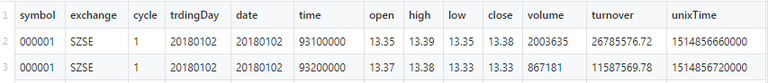

数据导入概述
DolphinDB提供了多种灵活的数据导入方法，来帮助用户方便的把海量数据从多个数据源导入。具体有如下4种途径：
- 通过文本文件导入
- 通过二进制文件导入
- 通过HDF5接口导入
- 通过ODBC接口导入
1. DolphinDB数据库基本概念和特点
本章中多处使用到DolphinDB的数据库和表的概念，所以这里首先做一个介绍。
在DolphinDB里数据以结构化数据表的方式保存。数据表按存储介质可以分为：
- 内存表：数据保存在内存中，存取速度最快，但是若节点关闭就会丢失数据。
- 分布式表：数据分布在不同的节点的磁盘上，通过DolphinDB的分布式计算引擎，逻辑上仍然可以像本地表一样做统一查询。
按是否分区可以分为：
- 普通表（未分区表）
- 分区表
在传统的数据库系统，分区是针对数据表定义的，就是同一个数据库里的每个数据表都可以有自己的分区定义；而DolphinDB的分区是针对数据库定义的，也就是说同一个数据库下的数据表只能使用同一种分区机制，这也意味着如果两张表要使用不同的分区机制，那么它们是不能放在一个数据库下的。
2. 通过文本文件导入
通过文件进行数据中转是比较通用化的一种数据迁移方式，方式简单易操作。DolphinDB提供了以下三个函数来载入文本文件：
loadText: 将文本文件以 DolphinDB 数据表的形式读取到内存中。ploadText: 将数据文件作为分区表并行加载到内存中。与loadText函数相比，速度更快。loadTextEx: 把数据文件转换为DolphinDB数据库中的分布式表，然后将表的元数据加载到内存中。
下面通过将 candle_201801.csv 导入DolphinDB来演示loadText和loadTextEx的用法。
2.1. loadText
loadText函数有三个参数，第一个参数filename是文件名，第二个参数delimiter用于指定不同字段的分隔符，默认是","，第三个参数schema是用来指定导入后表的每个字段的数据类型，schema参数是一个数据表，格式示例如下：
| name | type |
|---|---|
| timestamp | SECOND |
| ID | INT |
| qty | INT |
| price | DOUBLE |
首先导入数据：
dataFilePath = "/home/data/candle_201801.csv"
tmpTB = loadText(dataFilePath);DolphinDB在导入数据的同时，随机提取一部分的行以确定各列数据类型，所以对大多数文本文件无须手动指定各列的数据类型，非常方便。但有时系统自动识别的数据类型并不符合预期或需求，比如导入数据的volume列被识别为INT类型, 而需要的volume类型是LONG类型，这时就需要使用一个数据类型表作为schema参数。例如可使用如下脚本构建数据类型表：
nameCol = `symbol`exchange`cycle`tradingDay`date`time`open`high`low`close`volume`turnover`unixTime
typeCol = `SYMBOL`SYMBOL`INT`DATE`DATE`INT`DOUBLE`DOUBLE`DOUBLE`DOUBLE`INT`DOUBLE`LONG
schemaTb = table(nameCol as name,typeCol as type);当表字段非常多的时候，写这样一个脚本费时费力，为了简化操作，DolphinDB提供了extractTextSchema 函数，可从文本文件中提取表的结构生成数据类型表。只需修改少数指定字段的数据类型，就可得到理想的数据类型表。
整合上述方法，可使用如下脚本以导入数据：
dataFilePath = "/home/data/candle_201801.csv"
schemaTb=extractTextSchema(dataFilePath)
update schemaTb set type=`LONG where name=`volume
tt=loadText(dataFilePath,,schemaTb);如果数据文件中包含时间、日期的数据，满足分隔符要求的这部分数据（日期数据分隔符包含"-"、"/"和"."，时间数据分隔符为":"）会解析为相应的类型。例如："10:56:16"被解析为SECOND，"2023-11-08"被解析为DATE类型。对于不包含分隔符的数据，形如"yyMMdd"的数据同时满足0<=yy<=99，0<=MM<=12，1<=dd<=31，会被优先解析成DATE；形如"yyyyMMdd"的数据同时满足1900<=yyyy<=2100，0<=MM<=12，1<=dd<=31会被优先解析成DATE。
以数据文件 test_time.csv 为例，date1-date8 不同格式的数据均被解析为 DATE 类型，second被解析为 SECOND 类型。
dataFilePath = "/home/data/test_time.csv"
schemaTable = extractTextSchema(dataFilePath)| name | type |
|---|---|
| date1 | DATE |
| date2 | DATE |
| date3 | DATE |
| date4 | DATE |
| date5 | DATE |
| date6 | DATE |
| date7 | DATE |
| date8 | DATE |
| second | SECOND |
为确保数据导入准确，需要需要在 format 列中指定数据文件中日期或时间的格式
dataFilePath = "/home/data/test_time.csv"
schemaTable = extractTextSchema(dataFilePath)
formatColumn = ["yyyy.MM.dd","yyyy/MM/dd","yyyy-MM-dd","yyyyMMdd","yy.MM.dd","yy/MM/dd","yy-MM-dd","yyMMdd","HH:mm:ss"]
schemaTable[`format] = formatColumn
t = loadText(dataFilePath,',',schemaTable)
### 2.2. `ploadText`
`ploadText`函数的特点可以快速载入大文件（至少16MB）。它在设计中充分利用了多核CPU来并行载入文件，并行程度取决于服务器本身CPU核数量和节点的workerNum配置。
首先通过脚本生成一个4G左右的CSV文件：
```txt
filePath = "/home/data/testFile.csv"
appendRows = 100000000
dateRange = 2010.01.01..2018.12.30
ints = rand(100, appendRows)
symbols = take(string('A'..'Z'), appendRows)
dates = take(dateRange, appendRows)
floats = rand(float(100), appendRows)
times = 00:00:00.000 + rand(60 * 60 * 24 * 1000, appendRows)
t = table(ints as int, symbols as symbol, dates as date, floats as float, times as time)
t.saveText(filePath)分别通过loadText和ploadText来载入文件。本例所用节点是4核8超线程的CPU。
timer loadText(filePath);
Time elapsed: 39728.393 ms
timer ploadText(filePath);
Time elapsed: 10685.838 ms结果显示在此配置下，ploadText的性能是loadText的4倍左右。
2.3. loadTextEx
loadText函数总是把所有数据导入内存。当数据文件体积非常庞大时，服务器的内存很容易成为制约因素。DolphinDB提供的loadTextEx函数可以较好的解决这个问题。它将一个大的文本文件分割成很多个小块，逐步加载到分布式数据表中。
首先创建分布式数据库：
db=database("dfs://dataImportCSVDB",VALUE,2018.01.01..2018.01.31) 然后将文本文件导入数据库中"cycle"表：
dataFilePath = "/home/data/candle_201801.csv"
loadTextEx(db, "cycle", "tradingDay", dataFilePath)当需要使用数据时，通过loadTable函数将分区元数据先载入内存。
tb = database("dfs://dataImportCSVDB").loadTable("cycle")在实际执行查询的时候，会按需加载所需数据到内存。
3. 通过二进制文件导入
对于二进制格式的文件，DolphinDB提供了2个函数用于导入：readRecord!函数和loadRecord函数。二者的区别是，前者不支持导入字符串类型的数据，后者支持。下面通过2个例子分别介绍这两个函数的用法。
readRecord!函数
readRecord!函数能够导入不含有字符串类型字段的二进制文件，下面介绍如何使用readRecord!函数导入一个二进制文件：binSample.bin。
首先，创建一个内存表tb，用于存放导入的数据，需要为每一列指定字段名称和数据类型。
tb=table(1000:0, `id`date`time`last`volume`value`ask1`ask_size1`bid1`bid_size1, [INT,INT,INT,FLOAT,INT,FLOAT,FLOAT,INT,FLOAT,INT])调用file函数打开文件，并通过readRecord!函数导入二进制文件，数据会被加载到tb表中。
dataFilePath="/home/data/binSample.bin"
f=file(dataFilePath)
f.readRecord!(tb);查看tb表的数据，数据已经正确导入：
select top 5 * from tb;
id date time last volume value ask1 ask_size1 bid1 bid_size1
-- -------- -------- ---- ------ ----- ----- --------- ----- ---------
1 20190902 91804000 0 0 0 11.45 200 11.45 200
2 20190902 92007000 0 0 0 11.45 200 11.45 200
3 20190902 92046000 0 0 0 11.45 1200 11.45 1200
4 20190902 92346000 0 0 0 11.45 1200 11.45 1200
5 20190902 92349000 0 0 0 11.45 5100 11.45 5100date列和time列的数据为INT类型。可以使用temporalParse函数进行日期和时间类型数据的格式转换，再使用replaceColumn!函数替换表中原有的列。
tb.replaceColumn!(`date, tb.date.string().temporalParse("yyyyMMdd"))
tb.replaceColumn!(`time, tb.time.format("000000000").temporalParse("HHmmssSSS"))
select top 5 * from tb;
id date time last volume value ask1 ask_size1 bid1 bid_size1
-- ---------- ------------ ---- ------ ----- ----- --------- ----- ---------
1 2019.09.02 09:18:04.000 0 0 0 11.45 200 11.45 200
2 2019.09.02 09:20:07.000 0 0 0 11.45 200 11.45 200
3 2019.09.02 09:20:46.000 0 0 0 11.45 1200 11.45 1200
4 2019.09.02 09:23:46.000 0 0 0 11.45 1200 11.45 1200
5 2019.09.02 09:23:49.000 0 0 0 11.45 5100 11.45 5100loadRecord函数
loadRecord函数能够处理字符串类型的数据（包括STRING和SYMBOL类型），但是要求字符串在磁盘上的长度必须固定。如果字符串的长度小于固定值，则用ASCII值0填充，加载的时候会把末尾0去掉。下面介绍使用loadRecord函数导入一个带有字符串类型字段的二进制文件：binStringSample.bin。
首先，指定要导入文件的表结构，包括字段名称和数据类型。与readRecord!函数不同的是，loadRecord函数是通过一个元组来指定schema，而不是直接定义一个内存表。关于表结构的指定，有以下3点要求：
- 对于表中的每个字段，都需要以tuple的形式指定字段名称和相应的数据类型。
- 若类型是字符串，还需指定磁盘上的字符串长度（包括结尾的0）。例如：（"name",SYMBOL,24）。
- 将所有tuple按照字段顺序组成元组，作为表结构。
针对本例中的数据文件指定表结构，具体如下所示。
schema = [("code", SYMBOL, 32),("date", INT),("time", INT),("last", FLOAT),("volume", INT),("value", FLOAT),("ask1", FLOAT),("ask2", FLOAT),("ask3", FLOAT),("ask4", FLOAT),("ask5", FLOAT),("ask6", FLOAT),("ask7", FLOAT),("ask8", FLOAT),("ask9", FLOAT),("ask10", FLOAT),("ask_size1", INT),("ask_size2", INT),("ask_size3", INT),("ask_size4", INT),("ask_size5", INT),("ask_size6", INT),("ask_size7", INT),("ask_size8", INT),("ask_size9", INT),("ask_size10", INT),("bid1", FLOAT),("bid2", FLOAT),("bid3", FLOAT),("bid4", FLOAT),("bid5", FLOAT),("bid6", FLOAT),("bid7", FLOAT),("bid8", FLOAT),("bid9", FLOAT),("bid10", FLOAT),("bid_size1", INT),("bid_size2", INT),("bid_size3", INT),("bid_size4", INT),("bid_size5", INT),("bid_size6", INT),("bid_size7", INT),("bid_size8", INT),("bid_size9", INT),("bid_size10", INT)]使用loadRecord函数导入二进制文件，由于表的列数较多，通过select语句选出几列有代表性的数据进行后面的介绍。
dataFilePath="/home/data/binStringSample.bin"
tmp=loadRecord(dataFilePath, schema)
tb=select code,date,time,last,volume,value,ask1,ask_size1,bid1,bid_size1 from tmp;查看表内数据的前5行：
select top 5 * from tb;
code date time last volume value ask1 ask_size1 bid1 bid_size1
--------- -------- -------- ---- ------ ----- ----- --------- ----- ---------
601177.SH 20190902 91804000 0 0 0 11.45 200 11.45 200
601177.SH 20190902 92007000 0 0 0 11.45 200 11.45 200
601177.SH 20190902 92046000 0 0 0 11.45 1200 11.45 1200
601177.SH 20190902 92346000 0 0 0 11.45 1200 11.45 1200
601177.SH 20190902 92349000 0 0 0 11.45 5100 11.45 5100处理日期和时间列的数据：
tb.replaceColumn!(`date, tb.date.string().temporalParse("yyyyMMdd"))
tb.replaceColumn!(`time, tb.time.format("000000000").temporalParse("HHmmssSSS"))
select top 5 * from tb;
code date time last volume value ask1 ask_size1 bid1 bid_size1
--------- ---------- ------------ ---- ------ ----- ----- --------- ----- ---------
601177.SH 2019.09.02 09:18:04.000 0 0 0 11.45 200 11.45 200
601177.SH 2019.09.02 09:20:07.000 0 0 0 11.45 200 11.45 200
601177.SH 2019.09.02 09:20:46.000 0 0 0 11.45 1200 11.45 1200
601177.SH 2019.09.02 09:23:46.000 0 0 0 11.45 1200 11.45 1200
601177.SH 2019.09.02 09:23:49.000 0 0 0 11.45 5100 11.45 5100除了readRecord!和loadRecord函数之外，DolphinDB还提供了一些与二进制文件的处理相关的函数，例如writeRecord函数，用于将DolphinDB对象保存为二进制文件。具体请参考用户手册。
4. 通过HDF5接口导入
HDF5是一种高效的二进制数据文件格式，在数据分析领域广泛使用。DolphinDB支持导入HDF5格式数据文件。
DolphinDB通过HDF5插件来访问HDF5文件，插件提供了以下方法：
hdf5::ls - 列出h5文件中所有 Group 和 Dataset 对象
hdf5::lsTable - 列出h5文件中所有 Dataset 对象
hdf5::hdf5DS - 返回h5文件中 Dataset 的元数据
hdf5::loadHDF5 - 将h5文件导入内存表
hdf5::loadHDF5Ex - 将h5文件导入分区表
hdf5::extractHDF5Schema - 从h5文件中提取表结构
DolphinDB 1.00.0版本之后，安装目录/server/plugins/hdf5已经包含HDF5插件，使用以下脚本加载插件：
loadPlugin("plugins/hdf5/PluginHdf5.txt")若用户使用的是老版本，默认不包含此插件，可先从HDF5插件对应版本分支bin目录下载，再将插件部署到节点的plugins目录下。
调用插件方法时需要在方法前面提供namespace，比如调用loadHDF5可以使用hdf5::loadHDF5。另一种写法是：
use hdf5
loadHDF5(filePath,tableName)HDF5文件的导入与CSV文件类似。例如，若要导入包含一个Dataset candle_201801的文件candle_201801.h5，可使用以下脚本，其中datasetName可通过ls或lsTable获得：
dataFilePath = "/home/data/candle_201801.h5"
datasetName = "candle_201801"
tmpTB = hdf5::loadHDF5(dataFilePath,datasetName)如果需要指定数据类型导入可以使用hdf5::extractHDF5Schema，脚本如下：
dataFilePath = "/home/data/candle_201801.h5"
datasetName = "candle_201801"
schema=hdf5::extractHDF5Schema(dataFilePath,datasetName)
update schema set type=`LONG where name=`volume
tt=hdf5::loadHDF5(dataFilePath,datasetName,schema)如果HDF5文件超过服务器内存，可以使用hdf5::loadHDF5Ex载入数据。
首先创建用于保存数据的分布式表：
dataFilePath = "/home/data/candle_201801.h5"
datasetName = "candle_201801"
dfsPath = "dfs://dataImportHDF5DB"
db=database(dfsPath,VALUE,2018.01.01..2018.01.31) 然后导入HDF5文件：
hdf5::loadHDF5Ex(db, "cycle", "tradingDay", dataFilePath,datasetName)5. 通过ODBC接口导入
DolphinDB支持ODBC接口连接第三方数据库，从其中直接将数据表读取成DolphinDB的内存数据表。
DolphinDB官方提供ODBC插件用于连接第三方数据源，使用该插件可以方便的从ODBC支持的数据库迁移数据至DolphinDB中。
ODBC插件提供了以下四个方法用于操作第三方数据源数据：
- odbc::connect - 开启连接
- odbc::close - 关闭连接
- odbc::query - 根据给定的SQL语句查询数据并将结果返回到DolphinDB的内存表
- odbc::execute - 在第三方数据库内执行给定的SQL语句，不返回结果。
- odbc::append - 把DolphinDB中表的数据写入第三方数据库的表中。
在使用ODBC插件之前，需要安装ODBC驱动程序，请参考ODBC插件使用教程。
下面的例子使用ODBC插件连接以下SQL Server：
- server：172.18.0.15
- 默认端口：1433
- 连接用户名：sa
- 密码：123456
- 数据库名称： SZ_TAQ
第一步，下载插件解压并拷贝 plugins\odbc 目录下所有文件到DolphinDB server的 plugins/odbc 目录下（有些版本的DolphinDB安装目录/server/plugins/odbc已经包含ODBC插件，可略过此步），通过下面的脚本完成插件初始化：
loadPlugin("plugins/odbc/odbc.cfg")
conn=odbc::connect("Driver=ODBC Driver 17 for SQL Server;Server=172.18.0.15;Database=SZ_TAQ;Uid=sa;Pwd=123456;")第二步，创建分布式数据库。使用SQL Server中的数据表结构作为DolphinDB数据表的模板。
tb = odbc::query(conn,"select top 1 * from candle_201801")
db=database("dfs://dataImportODBC",VALUE,2018.01.01..2018.01.31)
db.createPartitionedTable(tb, "cycle", "tradingDay")第三步，从SQL Server中导入数据并保存为DolphinDB分区表：
tb = database("dfs://dataImportODBC").loadTable("cycle")
data = odbc::query(conn,"select * from candle_201801")
tb.append!(data);通过ODBC导入数据方便快捷。通过DolphinDB的定时作业机制，它还可以作为时序数据定时同步的数据通道。
6. 导入数据实例
下面以股票市场日K线图数据文件导入作为示例。每个股票数据存为一个CSV文件，共约100G，时间范围为2008年-2017年，按年度分目录保存。2008年度路径示例如下：
2008
---- 000001.csv
---- 000002.csv
---- 000003.csv
---- 000004.csv
---- ...每个文件的结构都是一致的，如图所示：

6.1. 分区规划
要导入数据之前，首先要做好数据的分区规划，即确定分区字段以及分区粒度。
确定分区字段要考虑日常的查询语句执行频率。以where, group by或context by中常用字段作为分区字段，可以极大的提升数据检索和分析的效率。使用股票数据的查询经常与交易日期和股票代码有关，所以我们建议采用 tradingDay和symbol这两列进行组合(COMPO)分区。
分区大小应尽量均匀，同时分区粒度不宜过大或过小。我们建议一个分区未压缩前的原始数据大小控制在100M~1G之间。有关为何分区大小应均匀，以及分区最佳粒度的考虑因素，请参考DolphinDB分区数据库教程第四节。
综合考虑，我们可以在复合(COMPO)分区中，根据交易日期进行范围分区（每年一个范围），并按照股票代码进行范围分区（共100个代码范围），共产生 10 * 100 = 1000 个分区，最终每个分区的大小约100M左右。
首先创建交易日期的分区向量。若要为后续进入的数据预先制作分区，可把时间范围设置为2008-2030年。
yearRange = date(2008.01M + 12*0..22);通过以下脚本得到symbol字段的分区向量。由于每只股票的数据量一致，我们遍历所有的年度目录，整理出股票代码清单，并通过cutPoint函数分成100个股票代码区间。考虑到未来新增的股票代码可能会大于现有最大股票代码，我们增加了一个虚拟的代码999999，作为股票代码的上限值。
symbols = array(SYMBOL, 0, 100)
yearDirs = files(rootDir)[`filename]
for(yearDir in yearDirs){
path = rootDir + "/" + yearDir
symbols.append!(files(path)[`filename].upper().strReplace(".CSV",""))
}
symbols = symbols.distinct().sort!().append!("999999");
symRanges = symbols.cutPoints(100)通过以下脚本创建复合(COMPO)分区数据库，以及数据库内的分区表"stockData"：
columns=`symbol`exchange`cycle`tradingDay`date`time`open`high`low`close`volume`turnover`unixTime
types = [SYMBOL,SYMBOL,INT,DATE,DATE,TIME,DOUBLE,DOUBLE,DOUBLE,DOUBLE,LONG,DOUBLE,LONG]
dbDate=database("", RANGE, yearRange)
dbID=database("", RANGE, symRanges)
db = database(dbPath, COMPO, [dbDate, dbID])
pt=db.createPartitionedTable(table(1000000:0,columns,types), `stockData, `tradingDay`symbol);6.2. 导入数据
数据导入的具体过程是通过目录树，将所有的CSV文件读取并写入到分布式数据库表dfs://SAMPLE_TRDDB 中。这其中会有一些细节问题。例如，CSV文件中保存的数据格式与DolphinDB内部的数据格式存在差异，比如time字段，原始数据文件里是以整数例如“9390100000”表示精确到毫秒的时间， 如果直接读入会被识别成整数类型，而不是时间类型，所以这里需要用到数据转换函数datetimeParse结合格式化函数format在数据导入时进行转换。可采用以下脚本：
datetimeParse(format(time,"000000000"),"HHmmssSSS")如果单线程导入100GB的数据会耗时很久。为了充分利用集群的资源，我们可以按照年度把数据导入拆分成多个子任务，发送到各节点的任务队列并行执行，提高导入的效率。这个过程可分为以下两步实现。
首先定义一个函数以导入指定年度目录下的所有文件：
def loadCsvFromYearPath(path, dbPath, tableName){
symbols = files(path)[`filename]
for(sym in symbols){
filePath = path + "/" + sym
t=loadText(filePath)
database(dbPath).loadTable(tableName).append!(select symbol, exchange,cycle, tradingDay,date,datetimeParse(format(time,"000000000"),"HHmmssSSS"),open,high,low,close,volume,turnover,unixTime from t )
}
}然后通过rpc函数结合submitJob函数把该函数提交到各节点去执行：
nodesAlias="NODE" + string(1..4)
years= files(rootDir)[`filename]
index = 0;
for(year in years){
yearPath = rootDir + "/" + year
des = "loadCsv_" + year
rpc(nodesAlias[index%nodesAlias.size()],submitJob,des,des,loadCsvFromYearPath,yearPath,dbPath,`stockData)
index=index+1
}数据导入过程中，可以使用pnodeRun(getRecentJobs)来观察后台任务的完成情况。
需要注意的是，分区是 DolphinDB database 存储数据的最小单位。DolphinDB对分区的写入操作是独占式的，当任务并行进行的时候，请避免多任务同时向一个分区写入数据。本例中每年的数据的写入由一个单独任务执行，各任务操作的数据范围没有重合，所以不可能发生多任务同时写入同一分区的情况。
本案例的详细脚本在附录提供下载链接。
6.3 小文件批量导入
在现实场景中，数据供应商会将一只股票数据保存到一个文件中，这种场景的特点是文件数量比较多，但单个文件比较小。如果将文件一个个导入，则效率会比较低。为提高导入效率，可以考虑将多个小文件批量合并后再导入。数据文件：数据文件。示例脚本如下：
//1. 建库建表
database(directory = 'dfs://k_day_level', partitionType = RANGE, partitionScheme =[2000.01M,2001.01M,2002.01M,2003.01M,2004.01M,2005.01M,2006.01M,2007.01M,2008.01M,2009.01M,2010.01M,2011.01M,2012.01M,2013.01M,2014.01M,2015.01M,2016.01M,2017.01M,2018.01M,2019.01M,2020.01M,2021.01M,2022.01M,2023.01M,2024.01M]$7, engine= `OLAP, atomic = `TRANS)
db = database("dfs://k_day_level")
colName = `securityid`tradetime`open`close`high`low`vol`val`vwap
colType = [SYMBOL,TIMESTAMP,DOUBLE,DOUBLE,DOUBLE,DOUBLE,INT,DOUBLE,DOUBLE]
tbSchema = table(1:0, colName, colType)
if(existsDatabase("dfs://k_day_level")){
dropDatabase("dfs://k_day_level")
}
db.createPartitionedTable(table=tbSchema,tableName=`k_day,partitionColumns=`tradetime)
//2. 导入数据文件
batchNum=1000
dir = "/home/data/smallDataset/"
allFiles = files(dir).filename
i = 0
s = allFiles.size()
do{
files =allFiles[i:min(i+batchNum, s)]
data = each(loadText, dir + files).unionAll(false)
loadTable("dfs://k_day_level","k_day").append!(data)
i = i + batchNum
}while(i < s)6.4 将数据文件导入表中，并添加股票名称列
和 6.3 的场景相似，一个股票的数据保存到一个文件，其中数据文件以标的名称命名，且文件中不包含标的名称列。本例导入需求如下：
在导入数据时，需要将在数据表中添加一列用于存储标的名称。
文件中的字段顺序和待导入表中字段顺序不一致。
本例以导入一个标的的文件为例，进行说明。
sz000001.csv 文件中字段顺序是 tradetime，open，close，high，low，vol。
待导入表的字段顺序是 symbol（需要添加的列），datetime，vol，open，close，high，low。
数据文件：数据文件。示例脚本如下：
dir = "D:/work/documentation/zh/tutorials/data/import_data_06/sz000001.csv"
sym = dir.split('/').tail(1).split('.')[0].')[0]
if(existsDatabase("dfs://stock_data")) {
dropDatabase("dfs://stock_data")
}
db=database(directory="dfs://stock_data", partitionType=VALUE, partitionScheme=2000.01M..2019.12M)
colNames=`sym`tradetime`vol`open`close`high`low
colTypes=[SYMBOL, DATETIME, INT, DOUBLE, DOUBLE, DOUBLE, DOUBLE]
t = table(1:0, colNames, colTypes)
pt = db.createPartitionedTable(t, `pt, `tradetime);
def mytrans(mutable t, sym, colNames){
t.replaceColumn!(`tradetime, datetime(t.tradetime))
//在中添加第一列 sym
t1 = select sym, * from t
//通过 reorderColumns! 调整表中各列的顺序
t1.reorderColumns!(colNames)
return t1
}
loadTextEx(db, `pt, `tradetime, dir, transform=mytrans{,sym, colNames})
select top 10 * from loadTable("dfs://stock_data", `pt)
| sym | tradetime | vol | open | close | high | low |
|----------|---------------------|--------|---------|---------|---------|---------|
| sz000001 | 2010.01.01T00:00:00 | 10,732 | 35.9484 | 35.4385 | 36.3261 | 35.9569 |
| sz000001 | 2010.01.04T00:00:00 | 97,555 | 16.4653 | 13.6348 | 16.7255 | 14.9401 |
| sz000001 | 2010.01.05T00:00:00 | 43,992 | 51.3616 | 53.1199 | 52.2155 | 50.4782 |
| sz000001 | 2010.01.06T00:00:00 | 85,283 | 76.3469 | 80.0076 | 76.7017 | 74.9479 |
| sz000001 | 2010.01.07T00:00:00 | 78,837 | 38.9411 | 35.8283 | 39.5269 | 38.2178 |
| sz000001 | 2010.01.08T00:00:00 | 13,317 | 70.8803 | 67.9027 | 71.8693 | 70.8072 |
| sz000001 | 2010.01.11T00:00:00 | 22,958 | 96.3163 | 97.4031 | 96.5605 | 96.364 |
| sz000001 | 2010.01.12T00:00:00 | 45,621 | 17.2699 | 18.5016 | 17.7689 | 16.5028 |
| sz000001 | 2010.01.13T00:00:00 | 54,886 | 75.7999 | 77.0245 | 76.4588 | 75.7482 |
| sz000001 | 2010.01.14T00:00:00 | 3,132 | 49.8656 | 49.3416 | 50.7761 | 49.7972 |
## 7. 附录
- [CSV导入数据文件](data/candle_201801.csv)
- [二进制导入例1数据文件](data/binSample.bin)
- [二进制导入例2数据文件](data/binStringSample.bin)
- [HDF5导入数据文件](data/candle_201801.h5)
- [案例完整脚本](data/demoScript.txt)